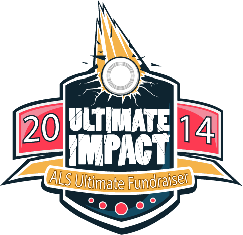
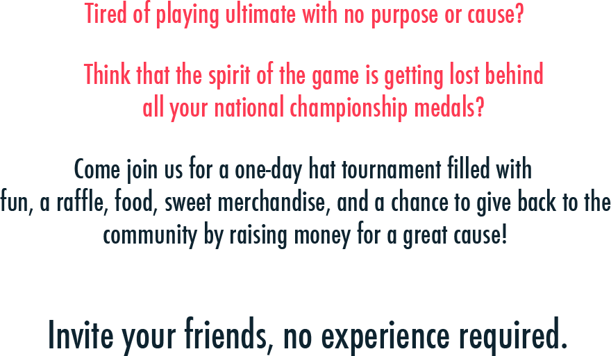
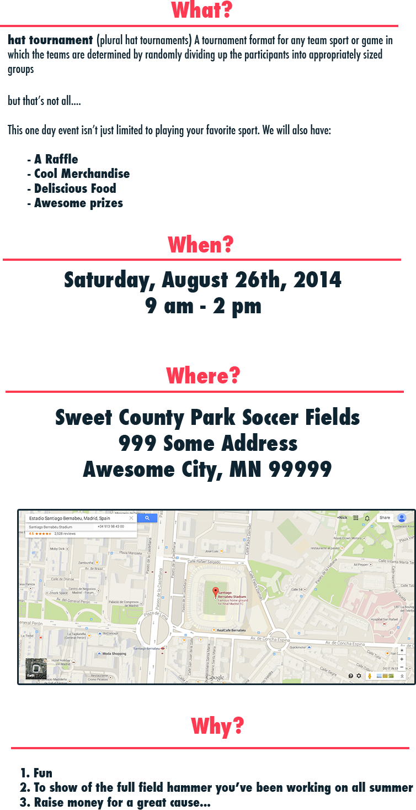
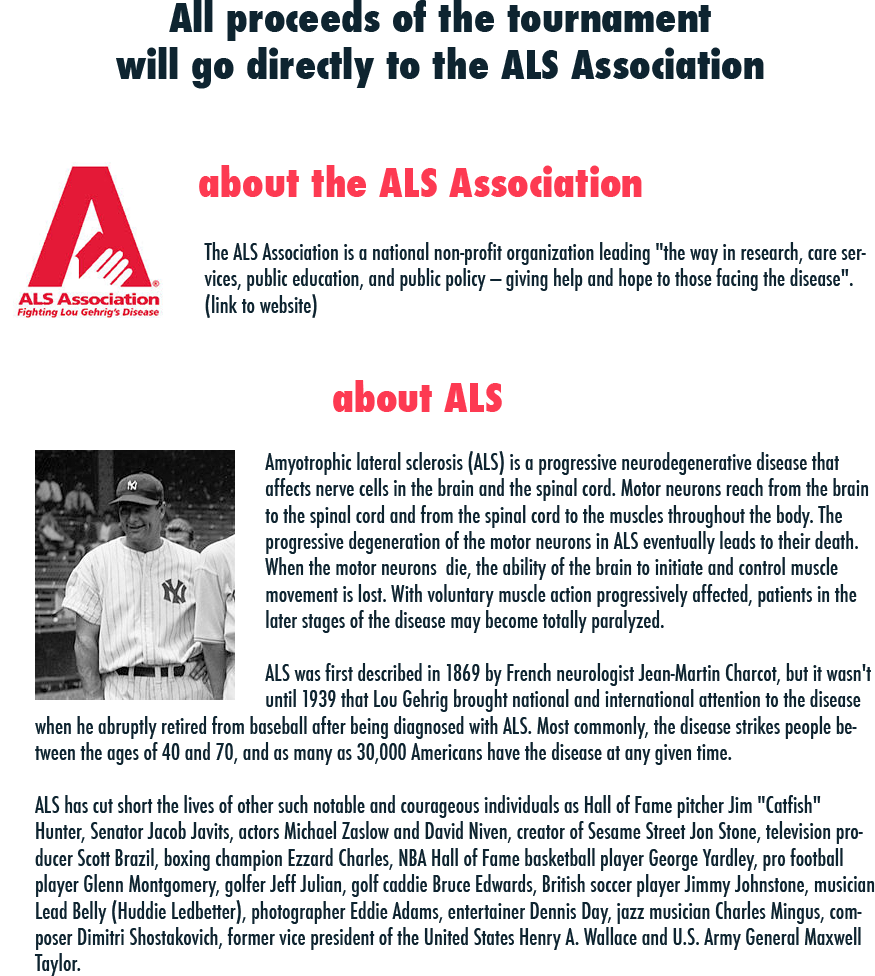
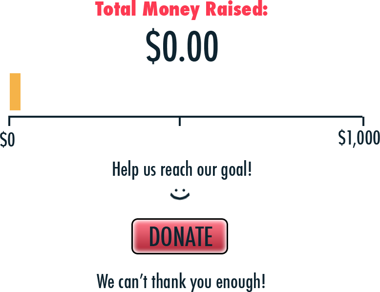
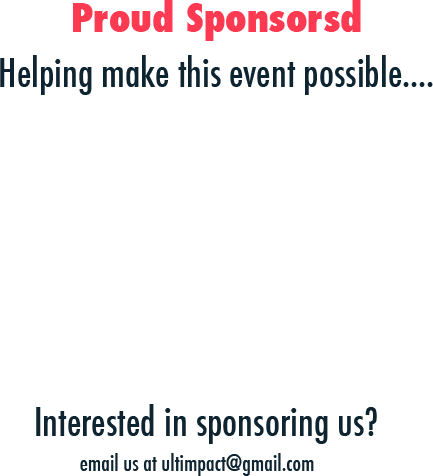
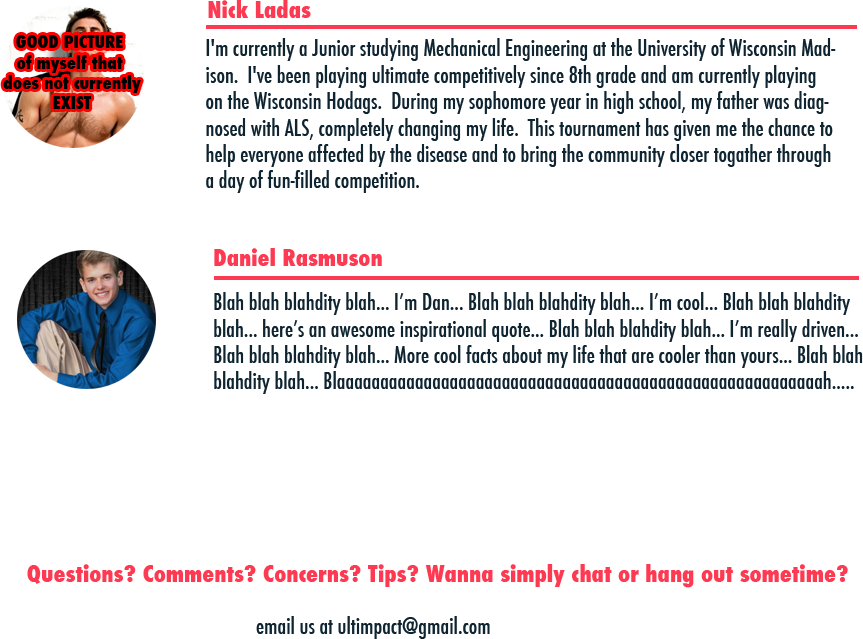

ULTIMATE IMPACT
an Ultimate Hat Tournament
raising money for ALS
August 23, 2014
Field Names, Maplewood
an Ultimate Hat Tournament
raising money for ALS
August 23, 2014
Field Names, Maplewood





